Índice
MÓDULO
AGENDAMENTO
O principal objetivo do módulo é poder agendar as consultas dos pacientes para atendimento médico ou para exames. Também é possível programar a grade de horários de atendimento dos médicos, bem como transferir totalmente ou parcialmente a agenda de um médico para outro. Podemos trabalhar os agendamentos por UPS ou como Central de Medicamentos.
Tem-se acesso a todos os cadastros do Módulo Agendamento, como o cadastro de Tipos de Ficha, Requisitos, Exames, etc... . È importante deixa-los sempre bem atualizados.
Utilizaremos os Tipos de Ficha quando precisamos identificar os Atendimentos agendados. Atenção: A grade de Horário que é mostrada no ato do agendamento da Consulta do Paciente será organizada por Tipo de Ficha. Exemplos de Tipo de Ficha : Consulta , Reconsulta .
Código: Será gerado automaticamente e corresponde ao código do item que está sendo incluído.
Descrição: Deve ser preenchido com a descrição do Tipo de Ficha.
Descrição: Altera a descrição dado ao Tipo de Ficha.
Código: Indique o código do Tipo de Ficha que queira excluir. Não é permitido excluir se estiver vinculado à Grade de Horário do Profissional.
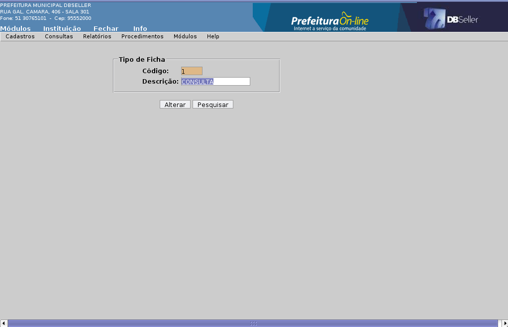Figura 1
Aqui se cadastra os requisitos necessários aos Exames, ou seja, tem alguns exames que exigem alguns pré-requisitos. Exemplo o exame de endoscopia exige doze horas de jejum do paciente. Atenção, é necessário cadastrar os requisitos antes de cadastrar os exames.
Código: Será gerado automaticamente e corresponde ao código do item que está sendo incluído.
Requisito: Informa-se o que é requisitado.
Descrição: Altera-se a descrição do requisito.
Código: Indique o código do Requisito que queira excluir. Não é permitido excluir se estiver vinculado a um Exame.
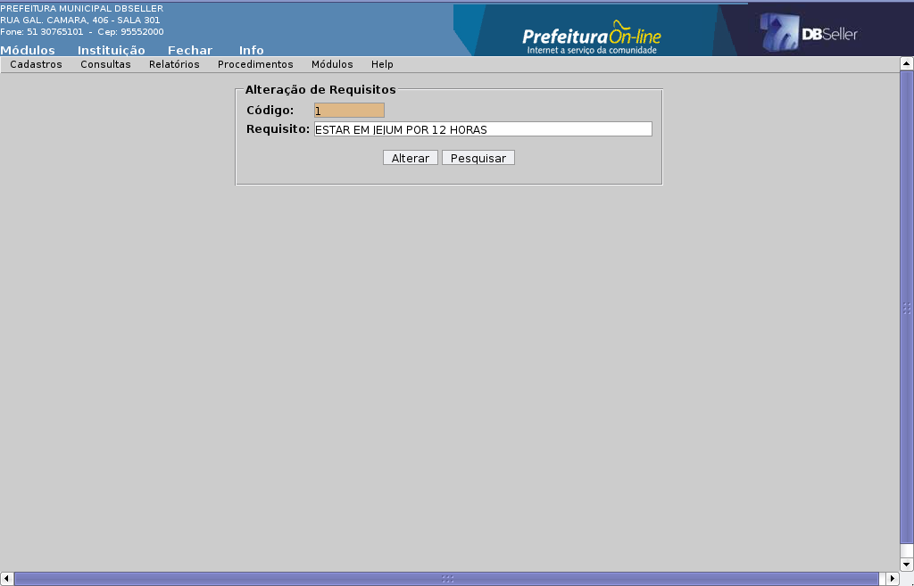
Figura 2
Os Exames com os seus Requisitos os quais serão vinculados a uma prestadora de serviço, como um Consultório Médico, um Laboratório, etc. Atenção, é necessário cadastrar os requisitos antes de cadastrar os exames.
ABA Exames
Código: O código será gerado automaticamente e corresponde ao código do item que está sendo incluído.
Exame: Entre com uma frase que identifique o exame.
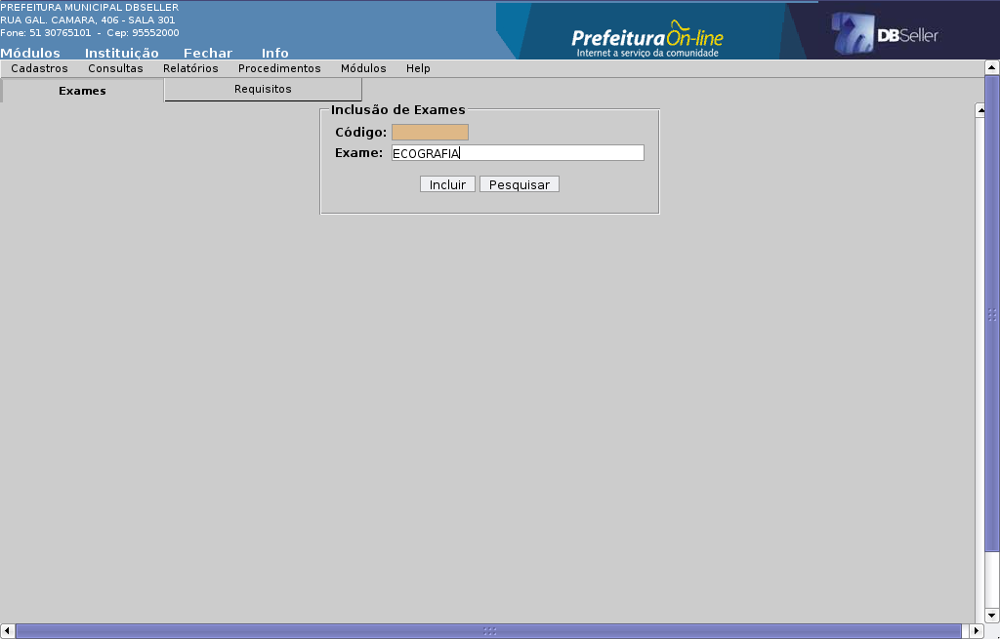Figura 3
Descrição: Altera-se a descrição do Exame.
Código: Indique o código do Exame que queira excluir. Não é permitido excluir se estiver vinculado a um requisito e(ou) a uma prestadora.
ABA Requisitos
Requisito: Indica-se os requisitos necessários ao paciente.
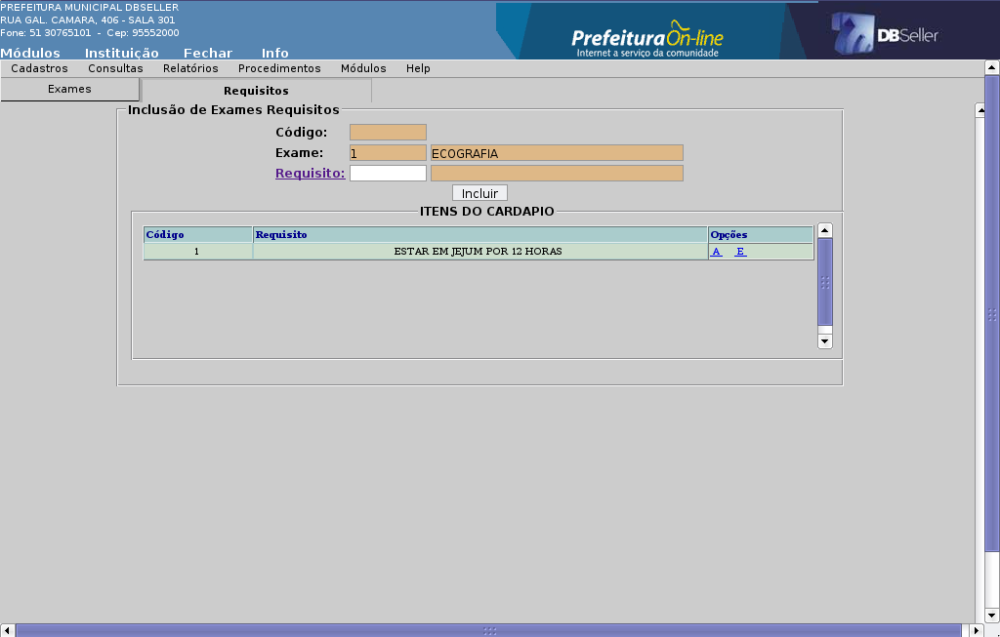Figura 4
Cadastro das Pessoas Jurídicas que prestam serviços, como um Consultório Médico, Laboratório, etc. Atenção, é necessário cadastrar os exames antes de cadastrar as prestadoras.
ABA Prestadores
Código: Será gerado automaticamente e corresponde ao código do item que está sendo incluído.
CGM: Para cadastrar uma prestadora deve estar cadastrado no CGM (cadastro Geral Municipal) da prefeitura, então pode adicionar o código diretamente ou clicar no link de consulta do CGM e pesquisar a prestadora.
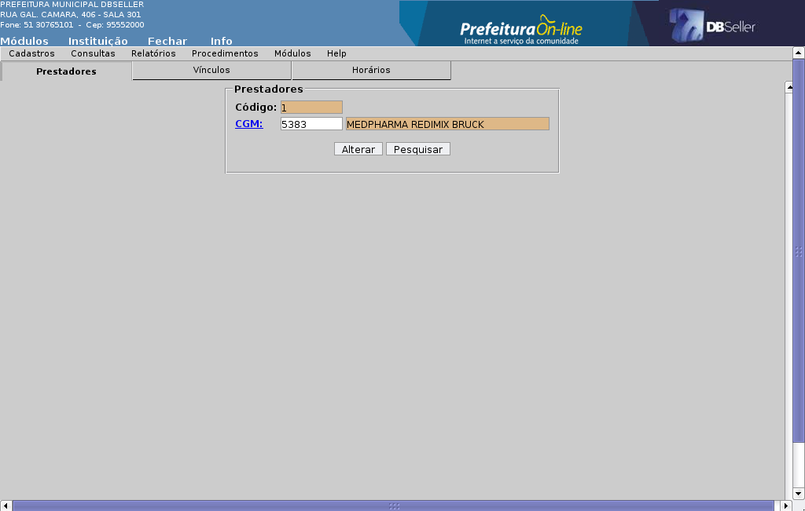Figura 5
ABA Vínculos
Exame: Indique quais são os exames que a prestadora pode efetua.
Situação : Por meio deste campo o usuário pode desativar um exame , quando desativado não aparecerá na lista de exames a ser agendados.
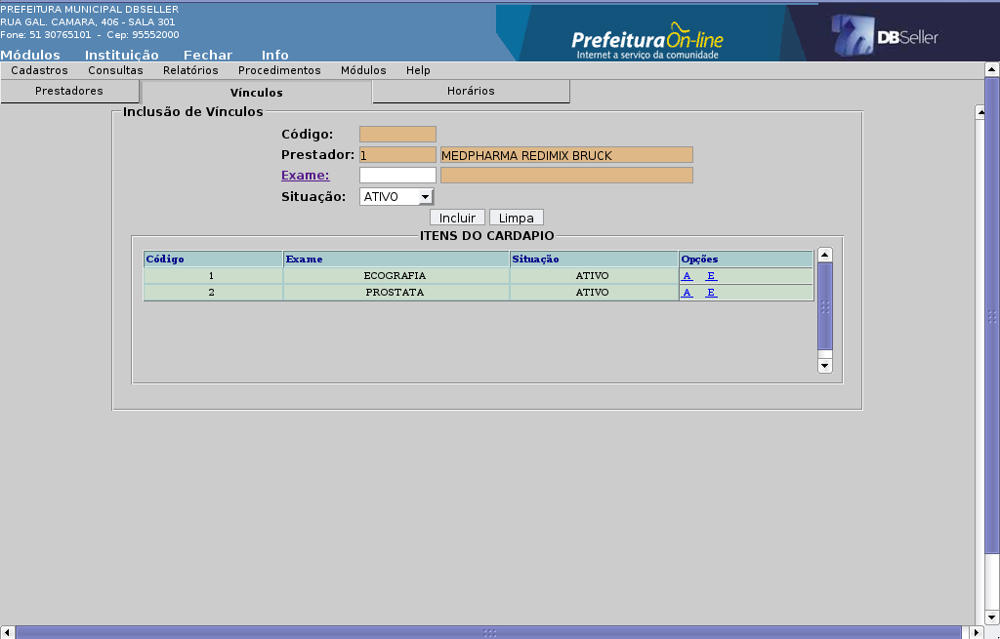
ABA Horários
É montada ou programada a grade de Horário do Prestadora ,ou seja , os dias em que estará disponível o Prestadora para a realização dos exames. Tendo esta grade de horários montada será possivel agendar os exames para este Prestadora. Permite dois tipos de grade.
Na grade tipo Período todas as fichas tem o mesmo horário inicial de agendamento de exame, agora se for Intervalo os exames são agendados em intervalos regulares.
O Intervalo é determinado pela divisão do Intervalo de Horário pela quantidade de Ficha, exemplo : Intervalo 08:30 a 10:30 -- > 120 min / 08 --> Intervalo = 15 min
Observação : O Tipo de Grade tem que ser o mesmo para o Dia da Semana, ou seja no mesmo Dia da Semana , por exemplo segunda-feira,não posso ter tipo Intervalo as 08:30 a 10:30 e Período 14:00 as 15:00.
Só poderá refazer a grade de horário de exames, para horários que não foram agendados ainda para a prestadora.
Os campos horário Inicio e Fim são validados, também , pelo horário Inicial e Final da Prestadora, ou seja , O turno de horário da grade respeita o turno de atendimento da Prestadora.
Exame: Aqui se vincula o exame a uma ou mais Grade de Horário.
Tipo de Grade: Depois escolhe o tipo de grade que pode assumir o tipo Intervalo ou Período. Caso Intervalo, todas as fichas terão o mesmo horário de agendamento de exames, agora se for Período os exames serão agendados em intervalos regulares, serão explicado melhor na Figura abaixo.
Dia da Semana: O campo pode ser Segunda, Terça, Quarta, Quinta, Sexta, Sábado ou Domingo.
Tipo de Ficha: Este campo vai preenchido conforme as opções cadastradas no Cadastro Tipo de Ficha.
Fichas: Neste campo colocamos a quantidade de fichas que poderá ser atendida entre o horário Inicial e Final.
Reserva: O campo serve para incluir a quantidade de Fichas indicado para situações especiais.
Data de Validação: Os campos Data Validade Inicial e Final controlam o período de vigência da Grade de Horário , ou seja, se o período de validade foi ultrapassado o sistema não permite agendamentos para esta grade.
Horário: Nos campos horário início e fim servem para entrar com o horário que o médico atenderá a quantidade de ficha.
Lançar: O botão inclui os horários de Atendimento na Grade de Horário e no caso de Alteração e Exclusão da Grade o botão Lançar muda o nome para Alteração ou Exclusão.
Código: O campo será gerado automaticamente para cada Lançamento (Inclusão) na Grade de Horário para identificar o Lançamento do Horário.
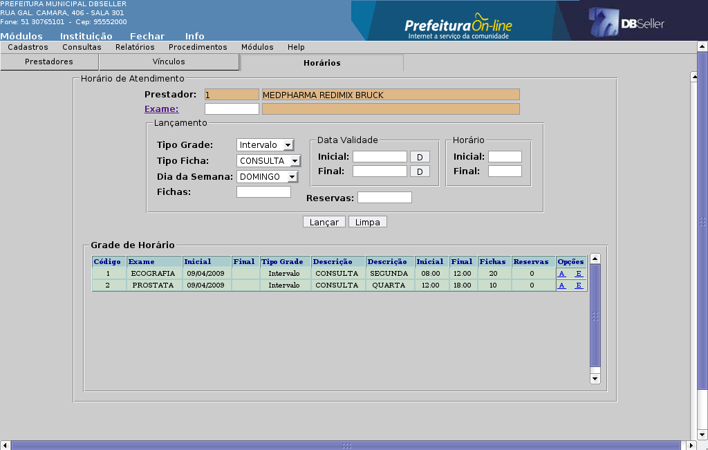Figura 7
Cadastra-se todos os profissionais de saúde do município que trabalham vinculados a secretaria de saúde do município. Este cadastro deve estar em conformidade com o CNES (Cadastro Nacional de Estabelecimentos de Saúde), pois a partir desse cadastro que o governo habilita o profissional a fazer o atendimento na unidade de saúde para o atendimento do SUS.
ABA Dados Pessoais
Profissional: Este campo gerará automaticamente o código do Profissional e por meio deste código que se identifica o Profissional.
CGM: Para cadastrar um profissional deve estar cadastrado no CGM (Cadastro Geral Municipal) da prefeitura, então pode adicionar o código diretamente ou clicar no link de consulta do CGM e pesquisar pelo nome da pessoa.
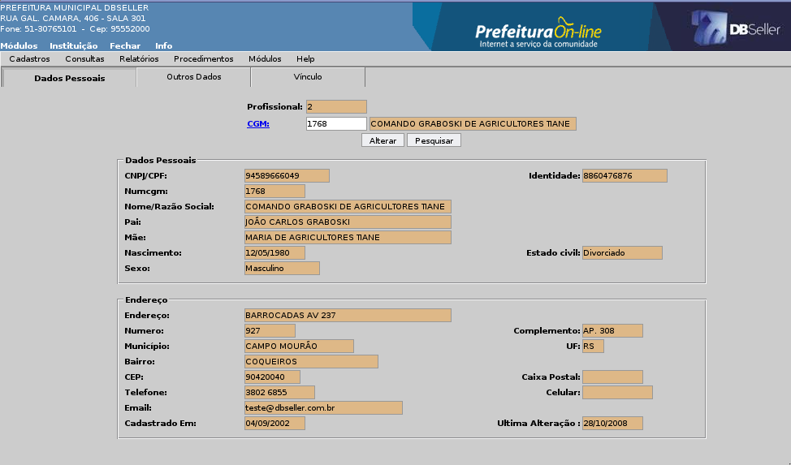
Figura
8
ABA Outros Dados
Nesta ABA deve ser cadastrado os documentos referente aos profissionais da saúde para melhor controle dos funcionários.
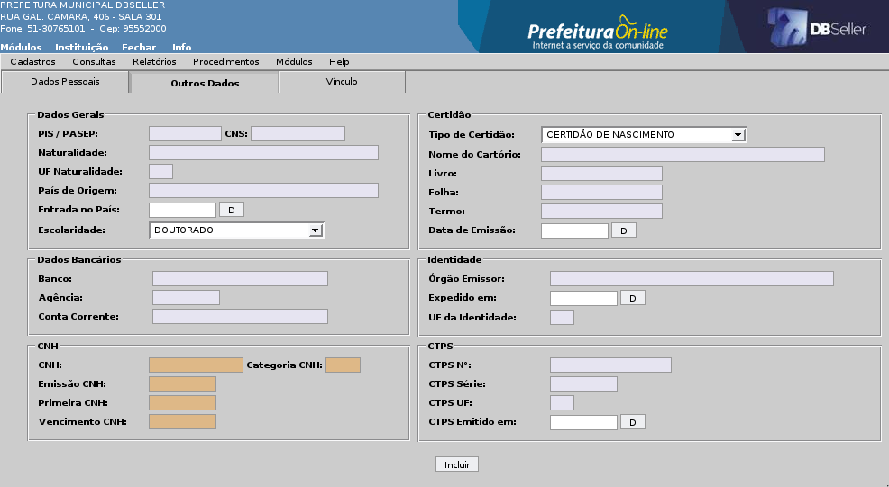
Figura
9
ABA Vínculos
Profissional: Código do campo gerado automaticamente e corresponde ao código do cadastro do profissional que está sendo incluído / alterado.
Unidade: Deve ser cadastrado a UPS que o profissional da saúde vai fazer o atendimento médico. Um profissional pode trabalhar em mais de um unidade e quantidade de horas diferentes.
Registro: Preenchido com o registro do órgão regulador no qual o profissional trabalha, este campo pode ser opcional, pois existem CBO que não possuem um órgão regulador.
Órgão Emissor: Cadastrar o código do órgão regulador caso o campo registro acima for preenchido, estes códigos são importados de um lista certificada pelo governo federal, ou clicar no link para pesquisar o código.
CBO: Cadastrar o código da CBO (especialidade) do profissional da área que ele atua, ou clicar no link de pesquisa para identificar o CBO. Na func de pesquisa devemos cadastrar apenas as CBOs com o tipo 4 (quatro), pois o CNES trabalha com as CBOs sintéticas e não com as analíticas.
Atividade Principal
Vinculo: Cadastrar o vínculo empregatício do profissional com a unidade de saúde, os dados do vínculos (Vínculo Empregatício, Autônomo, Cooperativa e Outros) são do programa do CNES do governo federal .
Tipo de Vinculo: Cadastrar o tipo de vínculo empregatício do profissional com a unidade de saúde, os dados do tipo (Estatutário, Cargo Comissionado, Celetista e outros) são do programa do CNES do governo federal.
Sub Tipo: Cadastrar o sub-tipo do profissional com a unidade de saúde, os dados do tipo (Sem Subtipo, Contrato por ONG, Contrato por Entidade Filantrópica) são do programa do CNES do governo federal.
Carga Horária Semanal
Ambulatorial: Registra a carga horária do profissional que contém no contrato de trabalho por semana no ambulatório. Esse campo é obrigatório o preenchimento, caso não atenda no ambulatório preencher com zero (0).
Hospitalar: Carga horária do profissional que contém no contrato de trabalho por semana no hospital. Esse campo é obrigatório o preenchimento, caso não atenda no hospital preencher com zero (0).
Outros: Cadastrar a carga horária do profissional que contém no contrato de trabalho por semana em outras unidades de saúde. Esse campo é obrigatório o preenchimento, caso não atenda em outras unidades preencher com zero (0).
Atendimento
Situação: Indica-se o profissional da saúde está Ativo ou Inativo, esta opção é muito importante, caso estiver Ativo o cadastro pode ser usado normalmente, do contrario o profissional não aparecerá na lista dos Profissionais para registro na Ficha de Atendimento ou na Triagem ou Consulta Médica).
SUS: Por meio desta opção informa ao sistema se o profissional de saúde faz atendimento pelo SUS (Sim ou Não), caso o profissional não atenda pelo SUS, ao gerar os relatórios e arquivos de envio do BPA para o SIA (Sistema de Informação Ambulatorial) não deve contar para os relatórios os procedimentos executadas por esta CBO.
Na alteração do cadastro de profissional não pode ser alterado os dados da (Unidade e CBO) se o profissional está vinculado a um atendimento médico, os outros dados podem ser alterados normalmente, inclusive a situação do profissional para (Ativo ou Inativo).
O sistema permite a exclusão do cmanual_agendamentoadastro se o profissional não esta vinculado a nenhum cadastro ou procedimento do sistema de saúde.
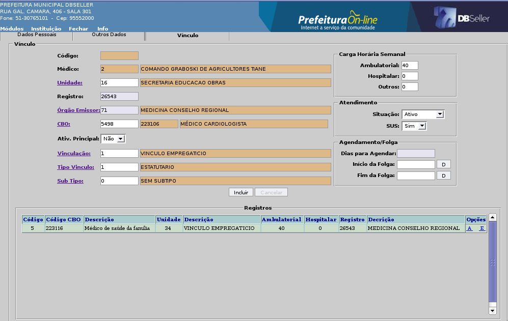
Figura
10
ABA Horários
Aqui é montada ou programada a grade de Horário do Profissional ,ou seja , os dias em que estará disponível o Profissional para atendimento. Tendo esta grade de horários montada será possivel agendar consultas para este Profissional. Permite dois tipos de grade.
Na grade tipo Período todas as fichas tem o mesmo horário inicial de atendimento, agora se for Intervalo os atendimentos são agendados em intervalos regulares.
O Intervalo é determinado pela divisão do Intervalo de Horário pela quantidade de Ficha, exemplo : Intervalo 08:30 a 10:30 -- > 120 min / 08 --> Intervalo = 15 min
Obs : O Tipo de Grade tem que ser o mesmo para o Dia da Semana, ou seja no mesmo Dia da Semana , por exemplo segunda-feira,não posso ter tipo Intervalo as 08:30 a 10:30 e Período 14:00 as 15:00.
O sistema não deixa a que soma dos horários da grade do profissional de uma semana para o vinculo UPS-CBO-PROF seja maior que a carga horária deste Profissional.
Ao cadastrar a grade horários de um Profissional em uma UPS-CBO-PROF , o sistema não deixa cadastrar se já foi cadastrado o mesmo dia e horário em outra UPS.
Não deixa cadastrar duas grade no mesmo horário no mesmo dia da semana e também não deixa repetir o intervalo de horários para o mesmo médico apesar de ter outra especialidade.
Só poderá refazer a grade de horário de atendimento, para horários que não foram agendados ainda para o médico.
Os campos horário Inicio e Fim são validados, também , pelo horário Inicial e Final da UPS, ou seja , O turno de horário da grade respeita o turno de atendimento do posto de saúde.
Vínculo: Primeiro clica na ancora deste campo, o qual vai abrir uma func com os vínculos do cadastro de profissionais.
Tipo de Grade: Depois escolhe o tipo de grade que pode assumir o tipo Intervalo ou Período. Se Intervalo, todas as fichas terão o mesmo horário de atendimento, agora se for Período os atendimentos serão agendados em intervalos regulares, serão explicado melhor na Figura abaixo.
Dia da Semana: O campo pode ser Segunda, Terça, Quarta, Quinta, Sexta, Sábado ou Domingo.
Tipo de Ficha: Este campo vai preenchido conforme as opções cadastradas no Cadastro Tipo de Ficha.
Fichas: Neste campo colocamos a quantidade de fichas que poderá ser atendida entre o horário Inicial e Final.
Reserva: O campo serve para incluir a quantidade de Fichas indicado para situações especiais.
Data de Validação: Os campos Data Validade Inicial e Final controlam o período de vigência da Grade de Horário , ou seja, se o período de validade foi ultrapassado o sistema não permite agendamentos para esta grade.
Horário: Nos campos horário início e fim servem para entrar com o horário que o médico atenderá a quantidade de ficha.
Lançar: O botão inclui os horários de Atendimento na Grade de Horário e no caso de Alteração e Exclusão da Grade o botão Lançar muda o nome para Alteração ou Exclusão.
Código: O campo será gerado automaticamente para cada Lançamento (Inclusão) na Grade de Horário para identificar o Lançamento do Horário.
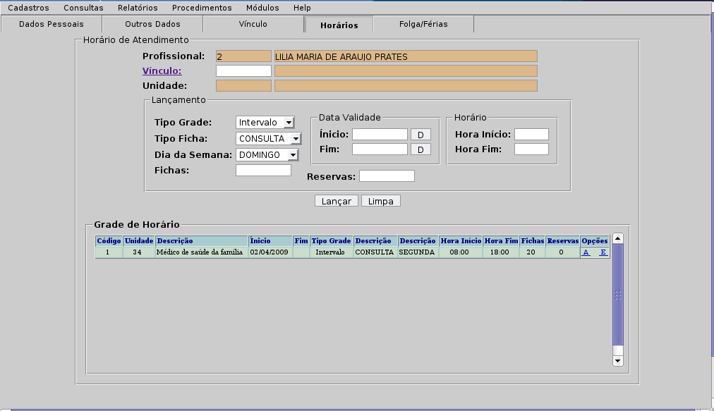Figura 11
ABA Folga/Férias
Aba Folga/Férias serve para registrar os dias de Folgas ou Férias do Profissional. Este registro é importante, pois com ele feito o sistema vai poder impedir que ocorra agendamento do paciente durante o período indicado para folga ou férias do paciente.
Vínculo: Clicando na ancora do campo abrirá uma func com os vínculos do Profissional.
Tipo: Será Folga ou Férias.
Data Início: Indicamos quando vai começar a Folga ou as Férias do Profissional.
Data Fim: Data do fim da Folga ou das Férias do Profissional.
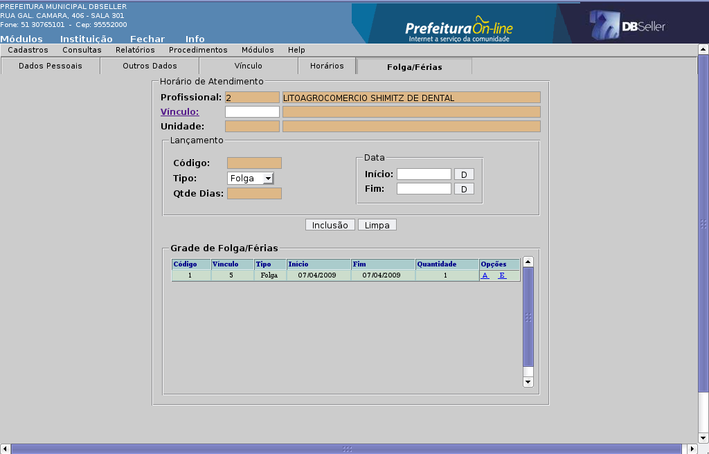Figura 12
Permite consultar o que o paciente agendou no período indicado . Para imprimir a consulta, tem que clicar no botão Imprimir.
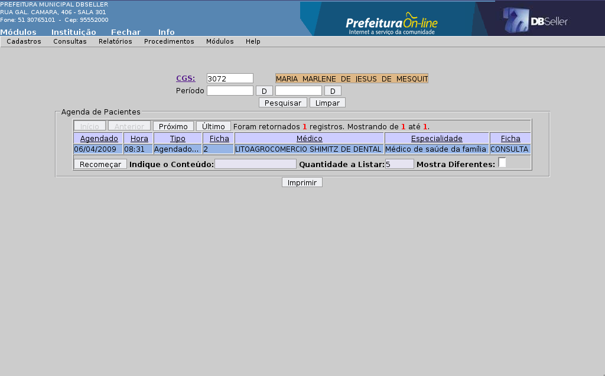Figura 13
Relatório para visualizar quais são os pacientes que serão atendidos pelo Profissional em um determinado dia.
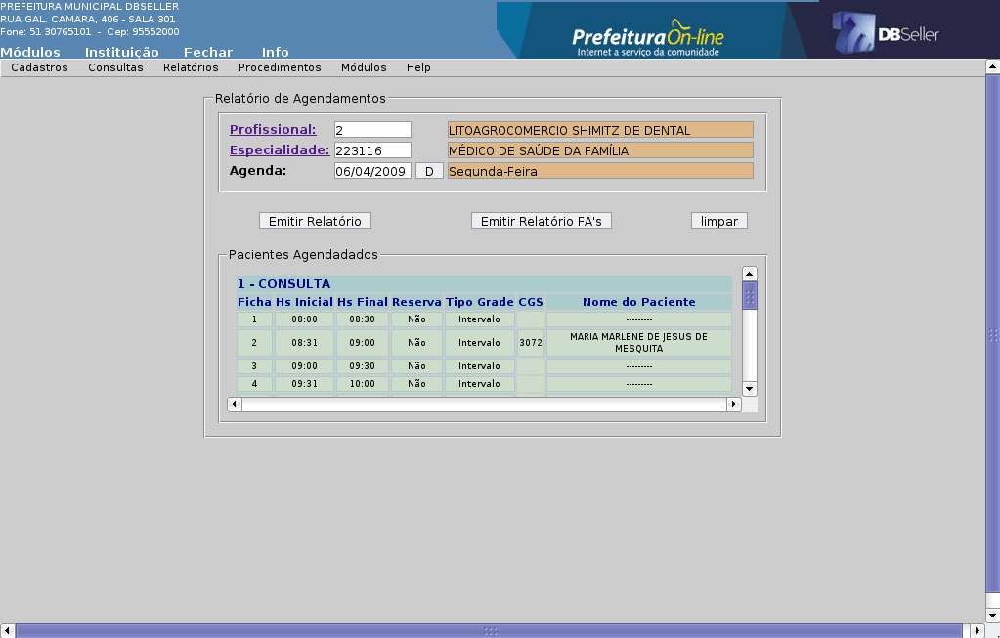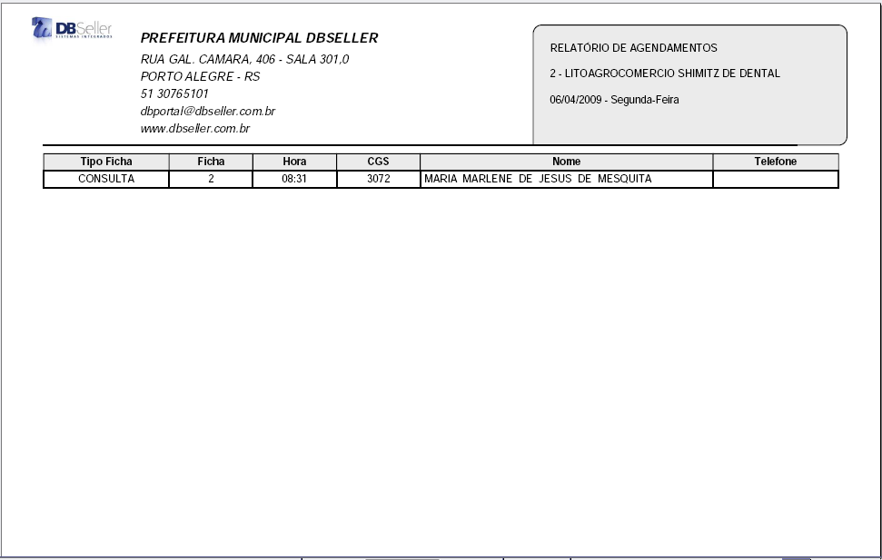Figura 14
Todas as rotinas necessárias ao agendamento na Unidade Posto de Saúde estão nesta opção, como o cadastramento do Agendamento, A transferencia individual ou Geral da Agenda e a Geração das FAs
Nesta opção é que agendamos os Exames para o Paciente. O processo se dá da seguinte forma:
Primeiro se indica o exame a realizar, exemplo : Ecografia, Mamografia, etc.
Segundo se escolhe um dos Prestadores. Escolhido o prestador o sistema montará um calendário com os dias em que o prestadorl vai atender, ou seja, que pode ser agendado. Cada dia do calendário , ao ser clicado, montará uma grade de horário do dia conforme definida no cadastro de Prestadores aba Grade de Horários para aquele dia da semana. Esta grade de horário listará os horários, por Intervalo ou Período, que estarão disponível para agendamento de exames.
Especialidade: Ao clicar na ancora o sistema traz as especialidades da UPS em que o usuário está ligado. Na consulta aparece somente os profissionais que possuem agenda e os que possuem vinculo para o departamento que está logado.
Profissional: O sistema disponibiliza os Profissionais da Especialidade indicada no campo anterior para a escolha.
Após preencher o campo agenda o sistema carregará o calendário apontando para a data indicada.
A Grade de horário do Dia vai acompanhar a data apontada pelo calendário, quero dizer, se for apontado outro dia a grade de horário tem que mostrar a grade deste dia.
Para agendar um Paciente em determinado horário terá que clicar no botão “L” na coluna “Opções” da grade de horários, o qual tem uma ancora para acessar a func CGS.
Ficha: Informa a quantidade de Fichas que poderá ser atendida no Dia.
Reserva: Campo com a quantidade de Fichas indicado para situações especiais.
Saldo: Mostra a quantidade de Fichas não atendidas.
Cada linha da grade de horário tem as seguintes opções : L = Lançar, A = Anular, E = Excluir, C = Comprovante.
Lançar : Abre uma janela para indicar o CGS do paciente.
Excluir: Como o nome diz, exclui o agendamento de exame do Paciente. Obs. caso o paciente já tenha sido atendido não será permitido exclusão.
Comprovante : Ao clicar o sistema emite o Comprovante de agendamento de exame conforme figura 06.
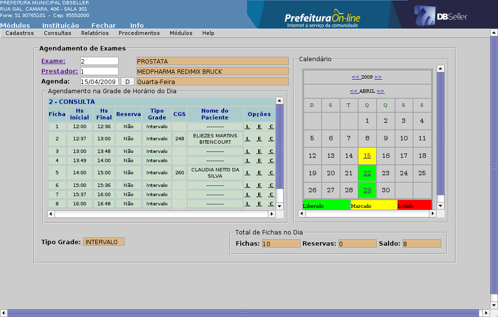
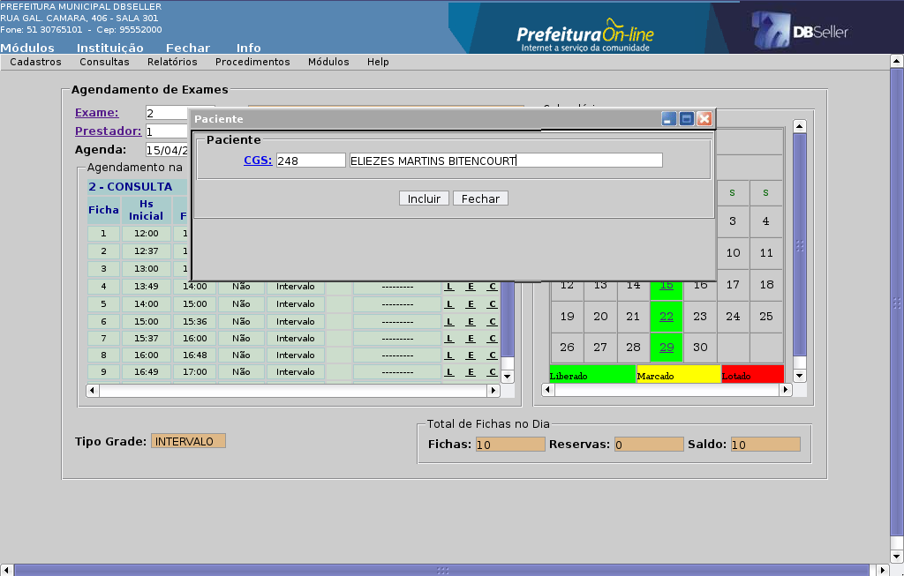
Nesta opção é que agendamos a Consulta para o Paciente. O processo se dá da seguinte forma:
Segundo se escolhe um dos Profissionais da especialidade indicada que pertencente a UPS. Escolhido o profissional o sistema montará um calendário com os dias em que o profissional vai atender, ou seja, que pode ser agendado. Cada dia do calendário , ao ser clicado, montará uma grade de horário do dia conforme definida no cadastro de Profissionais aba Grade de Horários para aquele dia da semana. Esta grade de horário listará os horários, por Intervalo ou Período, que estarão disponivel para agendamento. Cada linha da grade de horário tem as seguintes opções : L = Lançar, A = Anular, E = Excluir, C = Comprovante.
(L)ançar : Ao clicar se abre uma janela para indicar o CGS do paciente.
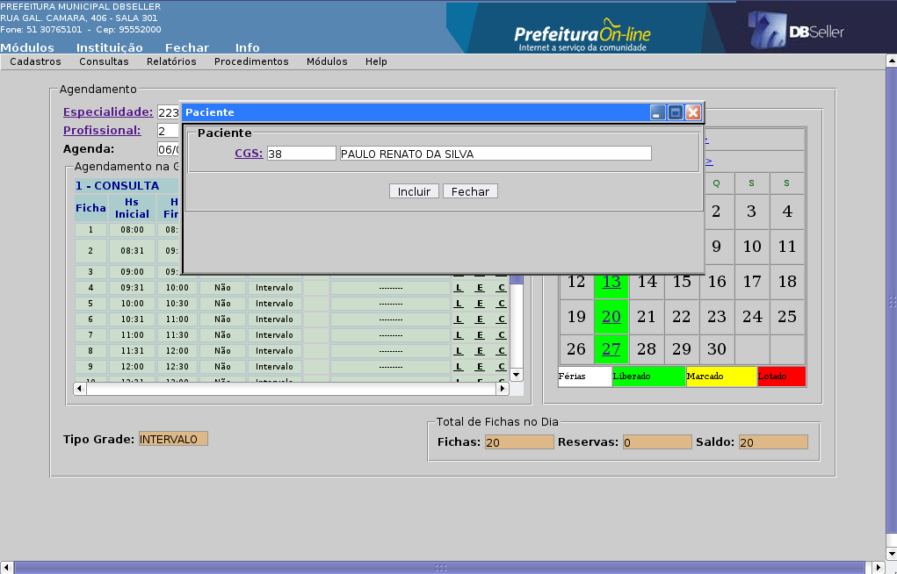Figura 18
(A)nular : Ao clicar o agendamento abrirá uma janela para indicar o Tipo de Anulação ( Cancelar, quando o paciente liga para cancelar a ficha, ou Faltou, quando o paciente não compareceu a consulta, ou Outros ) , e um campo para expor o Motivo da anulação.
Primeiro se indica a especialidade da consulta , exemplo : Dentista, Médico da Saúde da Família.
Se anulado, o sistema libera a ficha do paciente para ser agendado para outro paciente, mas não pode excluirá da agenda. Quando emitirmos a consulta do histórico de movimentação do paciente o tipo de anulação aparecerá no histórico.
(E)xcluir: Como o nome diz, exclui o agendamento do Paciente. Obs. caso o paciente já tenha sido atendido não será permitido exclusão.
(C)omprovante : Ao clicar em “C” o sistema emite o Comprovante de agendamento conforme figura 06.
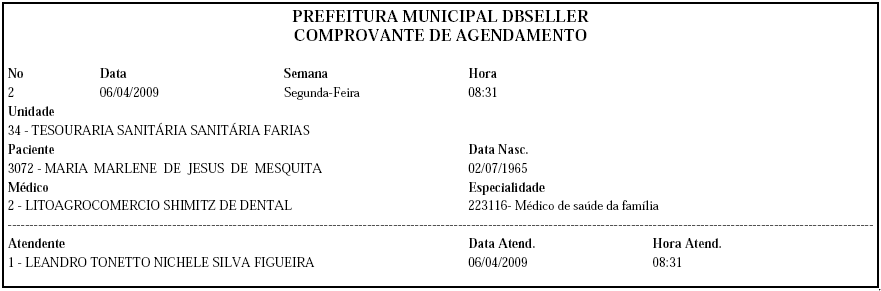Figura 19
Especialidade: Ao clicar na ancora o sistema traz as especialidade da UPS que o usuário está ligado. Na consulta aparece somente os profissionais que possuem agenda e os que possuem vinculo para o departamento que está logado.
Profissional: Ao clicar na ancora o sistema traz os profissionais da especialidade escolhida.
Após preencher o campo agenda o sistema carregará o calendário apontando para a data indicada.
A Grade de horário do Dia vai acompanhar a data apontada pelo calendário, quero dizer, se for apontado outro dia a grade de horário tem que mostrar a grade deste dia.
Para agendar um Paciente em determinado horário terá que clicar no botão “L” na coluna “Opções” da grade de horários, o qual tem uma ancora para acessar a func CGS.
Ficha: O campo mostra a quantidade de Fichas que poderá ser atendida no Dia. Campo para consulta.
Reserva: O campo mostra a quantidade de Fichas indicado para situações especiais. Campo para consulta
Saldo: O campo mostra a quantidade de Fichas não atendidas. Campo para consulta.
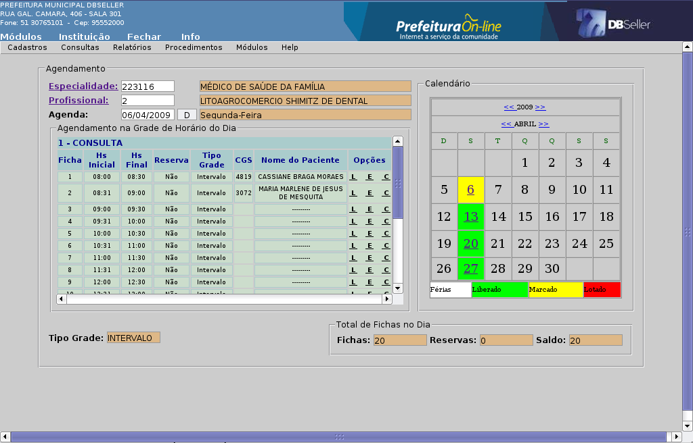Figura 20
Profissional: Ao clicar na ancora o sistema traz os profissionais da UPS se não for Central de Agendamento .
Especialidade: Ao clicar na ancora o sistema traz as especialidade do profissional indicado.
Agenda: Neste campo se informa a data da consulta a ser transferida , pode-se também clicar no botão “D”, o qual carregará o calendário para a escolha do dia que contém a consulta a ser transferida.
Ficha ou CGS : Se for “De” através destas ancoras o usuário pode escolher um dos paciente que agendou no dia informado no campo agenda para ser transferido. Agora se for “Para” só a ancora Ficha estará habilitada para a escolha do horário da consulta no dia indicado no campo Agenda.
Lançar: O sistema transfere a agenda do paciente confome indicado nos campos do Box De e em Para.
Limpar: Limpa os campos do Box De e Para , para uma próxima transferência.
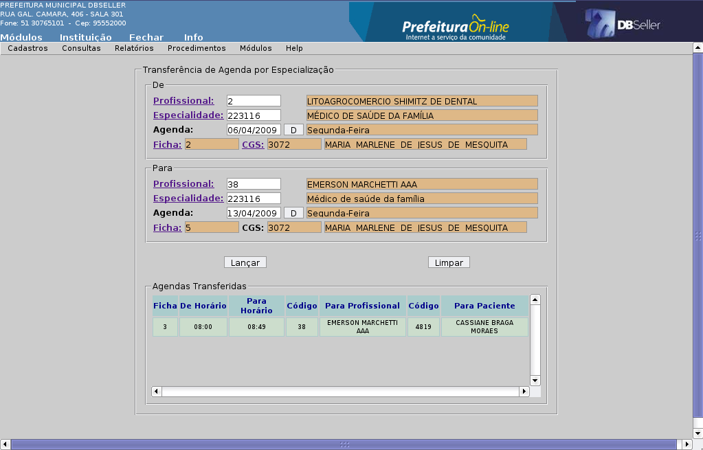Figura 22
Pode-se transferir a agenda total de um profissional para outro profissional da mesma especialidade. Atenção: a grade de horários do dia tem que ser igual , ou seja, do mesmo tipo , no caso o Tipo de Ficha , e os mesmos horários.
Profissional: O sistema traz os profissionais da UPS se não for Central de Agendamento .
Especialidade: Ao clicar na ancora o sistema traz as especialidade do profissional indicado.
Agenda: Informa-se data da(s) consulta(s) a ser transferida , pode-se também clicar no botão “D”, o qual carregará o calendário para a escolha do dia que contém a(s) consulta(s) a ser(em) transferida(s).
Transferir: O sistema transfere a agenda do paciente confome indicado nos campos do Box De e em Para.
Limpar: Limpa os campos do Box De e Para , para uma próxima transferência.
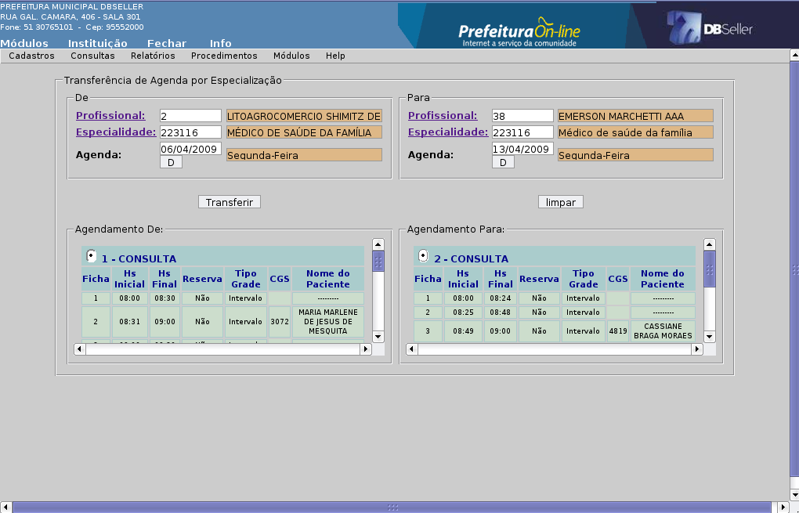Figura 23
|
DBSeller Serviços de Informática Ltda. – www.dbseller.com.br Rua General Câmara, 406/301 - Porto Alegmanual_agendamentore/RS - Fone: (51) 3076-5101 |
Versão – 2.1.84 |